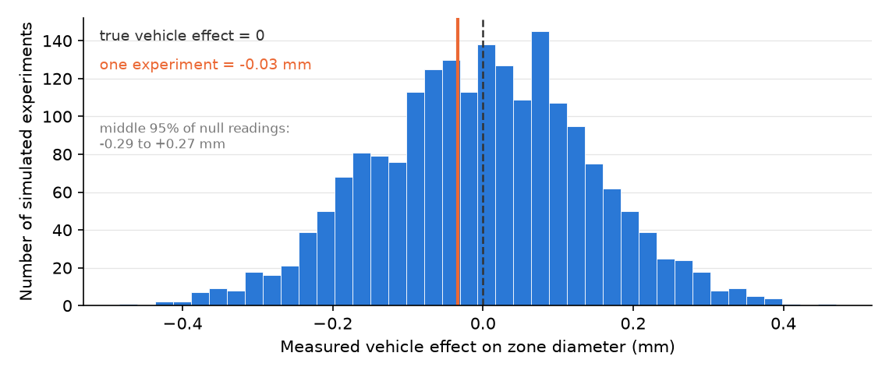

HONR 46400 · Evidence-Driven Research
Studio 8 — Stress-test and adjudicate
What you can defend when you leave
Studio 8
Attack your own result the way a hostile reviewer would, and record what survived.
The milestone ahead
Studio 8
This studio closes with Milestone 8: Your robustness audit, a short chapter of its own after the lessons. What it asks you to produce. A pre-listed robustness grid, negative tests with their assumptions stated, diagnostics, an adversarial-review record, and your adjudication of what survived.
The lessons in this studio
Studio 8 · Road map
- Lesson 24 — Robustness and Sensitivity: your pre-listed robustness grid with its full results, direction and size, plus the named null check.
- Lesson 25 — Diagnostics and Negative Tests: your negative test and diagnostic, each with the prediction you wrote before running it.
- Lesson 26 — AI as Adversarial Reviewer: your commissioned adversarial review with every flag adjudicated against the data, confirmed or refuted.
- Lesson 27 — Recognizing False Confidence: your confidence audit: the not-yet-recomputed list, where belief in the headline number comes from, and your boundary sentence.
Robustness and Sensitivity
Lesson 1 of this studio · Chapter 24
which alternative versions of your analysis you commit to running and reporting, chosen before you see any of their answers
The research decision
Chapter 24
You decide the full list of robustness and sensitivity checks you will run, and you decide it before you look at a single result, then report every one of them. Two things separate a defensible finding from a lucky slice: each version has to be a valid analysis on its own, and the looking has to come after the deciding. Pre-listing protects the second; nothing rescues the first. A check you think of later is still worth running, as long as you label it as one you added after seeing results and report it with the rest.
The words this chapter uses
Chapter 24 · Key terms
Shared bias
that common error running underneath an entire curve.
Specification searching
running many analyses and reporting only the one that gave the result you wanted, without disclosing the search.
A reviewer’s first question is about the versions you did not show
Chapter 24 · Why this decision matters
- The decision on the table: which alternative versions you commit to running and reporting.
- You choose them before you see any of their answers.
- Then you report every one of them.
Everyone shows me the version of the analysis that worked. I assume that one exists. My real question is what happened to all the reasonable versions you could have run instead, and whether you looked at them before or after you saw this answer.
Without the list, a delicate truth and a lucky slice look identical
Chapter 24 · Why this decision matters
- Almost every real estimate depends on choices you could have made differently.
- Any single choice can flatter the result.
- Report only the version that worked and nobody can separate a delicate truth from luck (Simmons et al. 2011).
Two named attacks, and people mix them up constantly
Chapter 24 · The concept
Robustness check
re-running the same finding under a different but equally defensible choice, to see whether the answer stays
Sensitivity check
deliberately changing an assumption to see how far the answer moves (Rosenbaum 2002)
- You reported an average order value, so recompute it without the wholesale buyer.
- You assumed checkout logged every purchase, so ask what a missed two percent does.
- An estimate is one number that depends on several choices, and a critic attacks them.
The headline estimate has four handles you can turn
Chapter 24 · The concept
Headline estimate: the single number that stands in for your whole finding.
- Sample: which data you keep.
- Measurement: how you turn a concept into a number.
- Specification: the bundle of modeling choices behind the estimate.
- Metric: the yardstick you report.
- Any honest plan turns one or more of them.
Before a dot joins the curve it passes a three-part gate
Chapter 24 · The concept
A specification curve plots one estimate under many defensible choices, side by side (Simonsohn et al. 2020) (Steegen et al. 2016).
- Same substantive claim: every version tests the one question the curve is about.
- Commensurable inside a panel: same units, same group, same kind of quantity.
- Changing who is counted, what the outcome means, or its scale opens another panel.
- No version may define its group by something the treatment could have changed.
A curve that agrees cannot see the flaw every version shares
Chapter 24 · The concept
- A curve entirely on one side of zero shows stability across the choices you listed.
- Choose the comparison group wrong and all sixteen versions inherit that error.
- They lean the same way together, and the picture looks reassuring.
- Shared bias: the common error running underneath an entire curve.
The spread says what your choices did, not what chance could do
Chapter 24 · The concept
- Specification spread: the span your answer covered across the versions you ran.
- It runs from lowest dot to highest, and says only how far your choices moved it.
- Every dot still carries sampling wobble of its own.
- Keep the lead estimate’s uncertainty a separate, labeled thing.
Twenty turns of the AI loop is twenty specifications
Chapter 24 · The concept
- Specification searching: running many analyses, reporting only the one you wanted, without disclosing the search.
- Its opposite is pre-listed checks: written down and all reported, before any result.
- Each prompt-and-refine cycle can change a filter, a variable, or a model.
- Re-prompt because the number disappointed you and you have run a search.
- Keep your own log of the cycles; the tool kept none for you.
A discount, and a twelve percent headline you attack before defending
Chapter 24 · A worked example
- Your team randomly assigns a loyalty discount and asks whether the offer raises spending.
- Target fixed before anything ran: 30-day spending per shopper you assigned.
- Shoppers who spent nothing are counted in.
- Headline: about twelve percent more than those not offered; these numbers are constructed.
Four handles turned, and one comparison kept off the curve
Chapter 24 · A worked example
- Sample: all shoppers, or all except the wholesale account placing bulk orders.
- Measurement: the total amount charged, or shipping and taxes stripped out.
- Specification: no adjustment, or adjusted for spending in the weeks before.
- Metric: the gain in dollars, or the gain as a percent.
- Averaging only over shoppers who ordered goes in its own labeled section.
One span per panel, never a span across them
Chapter 24 · A worked example
- Adjustment keeps the same people, outcome and units, so its versions share a panel.
- Dropping the wholesale account changes who is counted, so it opens a second.
- Stripping shipping and taxes changes what spending means, so it opens a third.
- Primary panel: positive in every pre-listed version, about eight to twelve percent.
- Excluding the wholesale account, the same versions ran ten to fifteen percent.
Three null checks get muddled, and each has its own procedure
Chapter 24 · A worked example
Assignment-based null check
re-runs the assignment your study actually performed, with the same group sizes and the same blocking
Permutation check
shuffles labels that were not randomly assigned, and answers something only if the groups were exchangeable
Negative control
points your analysis at an exposure, outcome, or period that should be causally null
- One redraw proves nothing, so you build a pile of fake gaps.
- That pile is what your machinery produces when the offer does nothing at all.
- This trial randomized, so use the first to build the pile.
Check that every row answers the same question before reading a number
Chapter 24 · A worked example
- All eight rows share one estimand, the quantity estimated: spending per shopper assigned.
- The printed range is a spread of defensible answers, not a confidence interval.
- The last block averages over orderers only, on a group the offer itself selected.
import numpy as np, pandas as pd
SEED = 464
rng = np.random.default_rng(SEED)
n = 4000
offered = rng.random(n) < 0.5
prior = rng.gamma(2.0, 30.0, size=n) # spending before the offer
ordered = rng.random(n) < (0.42 + 0.025 * offered) # the offer moves WHO orders
spend = np.where(ordered, rng.gamma(2.0, 33.0, size=n) * (1 + 0.12 * offered)
+ 0.25 * prior, 0.0) # past spending carries over
ship_tax = np.where(ordered, 6.0 + 0.07 * spend, 0.0)
gross = spend + ship_tax
wholesale = np.zeros(n, dtype=bool); wholesale[0] = True
gross[0] = 9_400.0 # the bulk buyer
df = pd.DataFrame({"offered": offered, "gross": gross, "net": spend,
"prior": prior, "ordered": ordered, "wholesale": wholesale})
def pct_gain(d, col, adjust=False):
v = d[col] - (np.polyval(np.polyfit(d.prior, d[col], 1), d.prior)
if adjust else 0)
a, b = v[d.offered].mean(), v[~d.offered].mean()
base = d.loc[~d.offered, col].mean()
return (a - b) / base * 100
grid = []
for s_label, d in (("all shoppers", df), ("minus the wholesale account",
df[~df.wholesale])):
for m_label, col in (("charged total", "gross"), ("net of shipping/tax", "net")):
for sp_label, adj in (("unadjusted", False), ("adj. prior spend", True)):
grid.append({"sample": s_label, "measurement": m_label,
"specification": sp_label,
"gain %": round(pct_gain(d, col, adj), 1)})
g = pd.DataFrame(grid)
print(g.to_string(index=False))
print(f"\nall eight share ONE estimand: spending per shopper ASSIGNED.")
print(f"range {g['gain %'].min():.1f}% to {g['gain %'].max():.1f}% — a spread of "
f"defensible answers, not a confidence interval")
# the specification that does NOT belong: conditioning on ordering
bad = pct_gain(df[df.ordered], "gross")
print(f"\naveraging over ORDERERS only: {bad:.1f}% — a different estimand, on a")
print("group the offer itself selected. it does not belong on the curve")An AI failure case
Chapter 24
Where the tool failed
You paste your four-handle grid and ask an AI to write your robustness section. Back comes a long, well-organized passage that runs the sample handle, the specification handle, and the metric handle, and closes with “the twelve percent result is robust across all standard specifications.” It reads as thorough and complete. The trap is that it never listed the measurement handle, the total amount charged versus shipping and taxes stripped out, and that is precisely the choice that moves your estimate the most. The section looks exhaustive while omitting the one check a reviewer would reach for first.
How it failed
Chapter 24 · An AI failure case
- You catch it because you pre-listed all four handles yourself before opening the tool.
- Reading its section against your own list, you notice measurement is missing, run that comparison, and watch the estimate slide toward the low end of your range.
- A passage that looks complete is not the same as one that is complete.
- You check its list against yours, not against how finished it sounds.
Do not delegate
Chapter 24
This stays yours
Three calls stay yours. You decide which checks you commit to before you look, which flagged issues the data actually confirms, and the final claim, with its per-panel span and its boundary, that you defend. A reviewer, human or AI, proposes. You verify against your own data, and the evidence decides.
It is your turn
Chapter 24 · Your move
- Write your headline estimate in one sentence.
- Pre-list the checks you will run, at least two, aimed at the handles a hostile reader would attack first.
- Before you run anything, run your list through the gate.
- Run every check on your list.
- Ask what every version on your list has in common.
- Add one null check, and name it with the chapter’s three labels, because each label comes with its own procedure and its own reading.
- Read back your AI cycle log and mark any re-prompt that followed a disappointing number.
- Log the pre-listed plan and its full results in your AI Research Ledger, and verify at least one output with a named method from the Verification Guide.
Work it in the companion notebook with Chapter 24 open beside it. Log every delegation in your AI Research Ledger.
Diagnostics and Negative Tests
Lesson 2 of this studio · Chapter 25
which check aimed at a guaranteed zero you run, and what passing it earns you
The research decision
Chapter 25
You decide which negative test your design actually needs, a check aimed at a place where the answer must be zero, and you decide what a clean pass does and does not license you to say. Picking the test is the research. Running it is the easy part.
A clear ring can mean your solvent is toxic
Chapter 25 · Why this decision matters
- A microbiology lab advisor, on the first plate they ask to see.
Before you tell me the extract works, show me the plate with no extract on it. If the blank disk also cleared the bacteria, you have not discovered a drug. You have discovered that your solvent is toxic.
Your own pipeline can manufacture the result you are about to report
Chapter 25 · Why this decision matters
- How you handled the samples. How you measured. How you coded the groups.
- Any one of them can produce a signal unrelated to what you set out to study.
- A negative test tells you whether the world made your result or your pipeline did.
- Skip it and you can spend months defending an artifact.
A negative test aims your exact analysis at a guaranteed zero
Chapter 25 · The concept
Negative test
a check that runs your exact analysis on a situation where the true answer has to be zero
Artifact
a signal produced by your procedure rather than by the thing you study
- Example: measure your “effect” in a group that received no treatment at all.
- Example of an artifact: a clear ring caused by the solvent, not the extract.
The true answer is zero; your reading almost never will be
Chapter 25 · The concept
- The true answer is zero. The number your sample returns will almost never be.
- Different samples wobble, so a clean pass is a small reading, not a blank one.
- Clean means it sits among the readings your procedure gives when nothing is happening.
- Worrying means far out from that pile, where ordinary wobble is a strained explanation.
- Chance does occasionally produce a large reading, so no cutoff turns this into a verdict.
Three conditions, or your control is not a test
Chapter 25 · The concept
A good negative control has to satisfy three conditions, and all three matter (Lipsitch et al. 2010).
- Your proposed cause must not be able to reach it, or it is not negative.
- The artifact you fear must be able to reach it, or it is not a test.
- Fear a toxic solvent? The control disk carries the solvent, minus only the extract.
- The check must be sensitive enough to show an artifact that would actually matter.
- A quiet control from an insensitive check is no evidence of a clean pipeline.
Three tests aim at zero, and the vehicle control matches your solvent
Chapter 25 · The concept
Placebo test
you replace the real cause with a fake one that cannot act, and confirm the effect disappears
Falsification test
you check a consequence that must be false if your explanation is right, and confirm it is false
Negative control
you point the same machinery at an outcome your cause could not possibly touch
Vehicle control
the negative control matched to how you delivered the cause: the carrier with the active ingredient left out
- Swap the real labels for a coin flip; the estimate should collapse toward zero.
- Dissolved your extract in ethanol? The vehicle control is a disk soaked in ethanol alone.
Leave-one-out asks whether a single point carries your finding
Chapter 25 · The concept
- The cheapest diagnostic in research: drop each case in turn and recompute.
- See whether one observation is quietly carrying your whole finding.
- A negative test asks whether your procedure invents signal.
- Leave-one-out asks whether your result rests on a single point.
A clean pass lowers one worry, and never more than that
Chapter 25 · The concept
The negative tests all share one move: aim the machinery where the answer must be zero, and check that what comes back is ordinary for a world where it is (Rosenbaum 2002).
- It reduces concern about one artifact, as far as that check could have detected it.
- It does not prove the artifact is absent.
- It does not prove your effect is real.
- It never turns a correlation into a cause.
- Report what the check could and could not have caught, not just that it passed.
A wide ring is tempting, so read the ethanol disk first
Chapter 25 · A worked example
- You soak a paper disk in plant extract, lay it on a bacterial lawn, incubate overnight.
- Next morning you measure the zone of inhibition, the clear ring where bacteria failed to grow.
- The extract was dissolved in 70% ethanol, so the vehicle control is an ethanol-only disk.
- A bare, uninhibited lawn around it: the ring is not a solvent artifact.
- Its own clear ring: the finding is an artifact until you redo it at lower concentration.
An assay that catches a strong antibiotic can still miss a small artifact
Chapter 25 · A worked example
- A positive control is a condition you know produces a signal, run through the same machinery.
- A disk soaked in a standard antibiotic should clear a wide ring.
- If even that disk reads flat, your assay is broken today and the quiet vehicle told you nothing.
- Clearing a ring shows the system answers a strong inhibitor, not that it notices a small one.
- Decide how big a solvent effect would change your conclusion, then show the assay sees it.
Both controls get read before the extract’s ring means anything
Chapter 25 · A worked example
- Four conditions, ten plates each: extract, vehicle only, standard antibiotic, extract at 20% ethanol.
- Watch the vehicle mean: under 1 mm passes, above it the solvent is doing work.
- Watch the positive control: a flat reading means the assay cannot detect anything.
- A negative control that passes on a broken assay proves nothing.
import numpy as np, pandas as pd
SEED = 464
rng = np.random.default_rng(SEED)
# Zone of inhibition (mm) on identical plates, ten replicates each.
conditions = {
"plant extract in 70% ethanol": 14.0, # what you want to claim
"vehicle only (70% ethanol)": 0.0, # negative control: must be bare
"standard antibiotic": 22.0, # positive control: must show a ring
"extract in 20% ethanol": 11.5, # the redo at lower solvent
}
plates = {c: np.clip(rng.normal(mu, 1.2, size=10), 0, None)
for c, mu in conditions.items()}
print(pd.DataFrame({"condition": list(plates),
"mean zone (mm)": [v.mean().round(1) for v in plates.values()],
"max zone (mm)": [v.max().round(1) for v in plates.values()]})
.to_string(index=False))
vehicle, positive = plates["vehicle only (70% ethanol)"], plates["standard antibiotic"]
print(f"\nnegative control ring : {vehicle.mean():.1f} mm -> "
f"{'PASS' if vehicle.mean() < 1 else 'FAIL, the solvent is doing work'}")
print(f"positive control ring : {positive.mean():.1f} mm -> "
f"{'PASS' if positive.mean() > 5 else 'FAIL, the assay cannot detect anything'}")
print("\nboth controls must be read before the extract's ring means anything.")
print("a negative control that passes on a broken assay proves nothing")Build a world where the vehicle does nothing, then run it 2,000 times
Chapter 25 · A seeded simulation
- Each run measures twelve matched vehicle and blank disks.
- A shared plate-to-plate wobble, plus ordinary measurement noise.
- The true vehicle effect is exactly zero by construction.
- Watch the first line: how many of the 2,000 readings come back exactly zero.
import numpy as np
import matplotlib.pyplot as plt
SEED = 464
rng = np.random.default_rng(SEED)
reps, pairs = 2000, 12
plate = rng.normal(0, 0.4, size=(reps, pairs)) # shared plate effect
blank = 6.3 + plate + rng.normal(0, .35, size=(reps, pairs))
vehicle = 6.3 + plate + rng.normal(0, .35, size=(reps, pairs))
nulls = (vehicle - blank).mean(axis=1) # true vehicle effect: exactly zero
print("exactly zero:", int((nulls == 0).sum()), "of", reps, "experiments")
print("rounds to 0.00 at two decimals:", int((nulls.round(2) == 0).sum()))
print("typical spread (middle 95%):", np.percentile(nulls, [2.5, 97.5]).round(2))
print("this run's reading:", round(float(nulls[0]), 3), "mm")In 2,000 honest experiments, not one reading was exactly zero
Chapter 25 · A seeded simulation
- Sixty-two round to 0.00 at two decimals, so a printed “0.00” is rounding, not nothing.
- The central 95 percent runs from about -0.29 to +0.27 mm.
- Rarer runs reach roughly -0.48 and +0.47. The first run returned -0.03.
- A researcher demanding a true zero would have failed all two thousand of them.

The null readings pile up around zero and spread from about -0.29 to +0.27 mm; none is exactly zero.
The pile shows ordinary variation; it is never a pass line
Chapter 25 · A seeded simulation
- Simulate your null world at your own sample size, then ask where your control sits.
- The pile is only as trustworthy as the assumptions that built it.
- The middle 95 percent excludes one honest experiment in twenty by construction.
- Drawing a cutoff there is a statistical decision, and no single cutoff settles it.
- Ask the three questions first, then report the evidence with its assumptions.
An AI failure case
Chapter 25
Where the tool failed
You ask an AI to design a negative control for your ethanol-based assay. It answers, with complete confidence, “use a disk soaked in sterile water.” You run it, the water disk comes back perfectly clean, and the tidy conclusion writes itself: control passed, effect confirmed. Here is the trap. Water is not the vehicle you used. You delivered the extract in ethanol, so the artifact you needed to catch is ethanol toxicity, and a water disk can never show it. The clean result told you nothing at all.
How it failed
Chapter 25 · An AI failure case
- You catch it with one question the tool never asked itself: which artifact could this control actually have detected?
- A valid vehicle control matches how you delivered the cause, solvent for solvent.
- The moment you see the mismatch you swap water for 70% ethanol and run the test that can genuinely fail.
- This is a plausible-but-wrong-method: the advice sounded like textbook practice and was wrong for your case.
Do not delegate
Chapter 25
This stays yours
You decide which negative test your design actually needs, whether the control is genuinely null (a place your cause truly cannot reach), and what a clean pass licenses you to claim. A tool can list candidate controls, but only you know the mechanism well enough to certify that your cause cannot touch the one you chose. The judgment about what a passed negative test bought you, and how far its sensitivity reached, stays yours.
It is your turn
Chapter 25 · Your move
- Name the artifact you are most afraid of: the one way your procedure, rather than your subject, could have manufactured your result.
- Choose the negative test that could catch it, whether that is a placebo label, a falsification outcome measured where the effect cannot yet exist, or a negative control your cause could not possibly touch.
- Before you run anything, write down two things.
- Run one diagnostic beside it.
- Record what you got against what you predicted, and if the estimate moved, say by how much.
- Log both tests in your AI Research Ledger, and verify at least one output with a named method from the Verification Guide. Simulation is the one useful tool for a negative test: build a dataset by hand where no effect exists, run your test machinery on it many times, and see the readings scatter around zero.
Work it in the companion notebook with Chapter 25 open beside it. Log every delegation in your AI Research Ledger.
AI as Adversarial Reviewer
Lesson 3 of this studio · Chapter 26
which of the flaws a reviewer names are real, settled by a check you run rather than by how sure the reviewer sounded
The research decision
Chapter 26
When a reviewer hands you a list of flaws in your own analysis, you decide which flaws are real, and you decide it by running the one data check that confirms or refutes each, never by going with whichever reviewer sounded most certain. Confidence is not evidence, and a panel of confident reviewers is not three pieces of evidence.
The words this chapter uses
Chapter 26 · Key terms
Specification searching
trying many versions of an analysis and reporting only the one that gave the answer you wanted, without disclosing the search (Simmons et al. 2011).
Correlated error
two reviewers wrong in the same way, so their agreement is an echo, not a confirmation (Peker 2023).
The person who signs off is the one fielding the complaints
Chapter 26 · Why this decision matters
- You propose rolling a store change out to every store in the chain.
- The operations manager’s sign-off is what lets it get there.
- That manager also answers for it when the checkout lines say otherwise.
- Example: complaints about backed-up queues on the first busy Saturday.
“I trust the check, not the graph”
Chapter 26 · Why this decision matters
- The decision on the table: which of the flaws a reviewer names are real.
- Settled by a check you run, not by how sure the reviewer sounded.
Do not tell me the numbers got better. Tell me which check you ran that would have caught it if they hadn’t. I trust the check, not the graph.
A confident number and a fluent critique fail the same way
Chapter 26 · Why this decision matters
- A confident measurement can be wrong.
- So can a fluent AI critique, and so can a clean-looking table.
- All three can be wrong in the same convincing way.
- What the manager wants sounds least impressive and matters most.
- The check you committed to before you looked, and the flag you verified.
A reviewer’s job is to attack your result, not to praise it
Chapter 26 · The concept
Adversarial reviewer
a reader whose job is to attack your result and find where it breaks, not to praise it
Robustness check
re-runs the same finding under a different but equally defensible choice, and sees whether the answer holds
Placebo test
runs your exact procedure where the effect cannot exist, and asks whether what comes back is ordinary for a world with nothing in it
- The reviewer can be a colleague, one AI tool, or a panel of models.
- Each of the three fails in its own way.
- You defend a result by trying to break it first.
You measured at one time of day, so measure at two more
Chapter 26 · The concept
- Robustness: you measured the improvement during one time of day.
- So measure it in two other realistic time blocks as well.
- Placebo: compare two stretches of the old layout against each other.
- Repeat over many pairs, since any two stretches differ a little by chance.
- An “improvement” far larger than the rest of that pile is your measurement lying.
Reporting only the hour where your change wins has a name
Chapter 26 · The concept
- Specification searching: many versions run, only the flattering one reported, the search undisclosed (Simmons et al. 2011).
- Its everyday name is p-hacking.
- Example: you measure ten different hours and show only the hour that wins.
- The cure is pre-listed checks, committed to before you see any result (Nosek et al. 2018).
- Example: write down three time blocks and one placebo, run all four, report every number.
Two reviewers wrong the same way is an echo, not a confirmation
Chapter 26 · The concept
- Correlated error: two reviewers wrong in the same way (Peker 2023).
- Their agreement is an echo, not a confirmation.
- Example: two AI models share a blind spot and flag the same non-issue.
- Both sound equally certain while doing it.
- A panel of confident reviewers is not three pieces of evidence.
An agentic reviewer finds more, and still does not get a vote
Chapter 26 · The concept
- Point a tool at your whole analysis: it reads your code, reruns it, tries variants.
- It returns a ranked list of problems, and it will find real errors you missed.
- Every item on that list is still a proposal.
- Each still needs the same treatment: name the check, run it, read your own output.
- A longer, better organized list is more tempting to accept wholesale.
You attack the p95 drop from 210 to 137 before you defend it
Chapter 26 · A worked example
- Your store installed a new self-checkout layout, and your data say lines moved faster.
- p95 wait time: the wait 95 out of 100 customers come in under.
- Fairer than the average, because it catches the long waits people complain about.
- A p95 of 210 seconds means only the slowest 5 percent waited longer.
- Your headline is a p95 drop from 210 seconds to 137.
Three reviewers, three fatal flaws, all confident and all different
Chapter 26 · A worked example
- The first says the win is driven by a single unusually quiet morning.
- The second says you cherry-picked the one customer mix where the layout helps.
- The third says you compared a fully staffed week against a short-handed one.
- On the third reading, you measured staffing rather than the layout.
- All three are confident, and all three disagree.
Turn each flaw into a check, and two of them dissolve
Chapter 26 · A worked example
- Leave-one-out drops the quiet morning and recomputes the p95: it barely moves.
- So the first flaw is refuted.
- Your pre-listed grid reruns the drop across three customer mixes: it holds in all three.
- The placebo compares two stretches of the old layout, and comes back near zero.
- The two loudest flags dissolved the moment a check touched them.
Watch which line decides, not which reviewer sounded surest
Chapter 26 · A worked example
- Watch the leave-one-out range: the drop survives dropping any single morning.
- Watch the three mixes side by side, old p95 against new.
- Watch the placebo: the old layout against itself should come back near zero.
import numpy as np, pandas as pd
SEED = 464
rng = np.random.default_rng(SEED)
def waits(n, scale, staffed):
return rng.gamma(2.2, scale * (1.0 if staffed else 1.18), size=n)
mornings = 20
old = pd.DataFrame({"morning": np.repeat(np.arange(mornings), 60),
"wait": np.concatenate([waits(60, 40, m % 5 != 0)
for m in range(mornings)]),
"mix": np.tile(["commuter", "shopper", "family"], 400)})
new = pd.DataFrame({"morning": np.repeat(np.arange(mornings), 60),
"wait": np.concatenate([waits(60, 27, m % 5 != 0)
for m in range(mornings)]),
"mix": np.tile(["commuter", "shopper", "family"], 400)})
p95 = lambda d: np.quantile(d.wait, 0.95)
print(f"headline p95: {p95(old):.0f} s -> {p95(new):.0f} s")
# flaw 1: one unusually quiet morning is carrying the win
loo = [p95(new[new.morning != m]) for m in range(mornings)]
print(f"\nleave-one-out p95 range : {min(loo):.0f}-{max(loo):.0f} s "
f"(the drop survives dropping any single morning)")
# flaw 2: it only holds for one customer mix
by_mix = pd.DataFrame({"old p95": old.groupby("mix").wait.quantile(0.95),
"new p95": new.groupby("mix").wait.quantile(0.95)}).round(0)
print("\n" + by_mix.to_string())
# flaw 3: the placebo — two stretches of the OLD layout against each other
placebo = p95(old[old.morning < 10]) - p95(old[old.morning >= 10])
print(f"\nplacebo, old layout vs itself : {placebo:+.0f} s "
f"({'clean' if abs(placebo) < 25 else 'the machinery manufactures gaps'})")
print("three confident reviewers, three checks, and only the checks decide")The flaw that survives is the one no measurement can remove
Chapter 26 · A worked example
- None of the three reviewers raised it.
- This ran at one store, on weekdays, not across the chain.
- No further measurement removes that, so the honest claim is bounded.
- You measured a p95 improvement for these three customer mixes, at this store.
- Not a guarantee for every location your company runs.
An AI failure case
Chapter 26
Where the tool failed
You paste your wait-time summary into an AI reviewer, and it answers with total certainty: your improvement is an artifact of one unusually quiet morning, drop that morning and it vanishes. The claim is specific, mechanistic, and stated without a hedge. It reads exactly like a reviewer who has seen this mistake a hundred times.
How it failed
Chapter 26 · An AI failure case
- Here is how you catch it.
- You do not act on the verdict.
- You run the leave-one-out yourself, dropping the quiet morning and recomputing the p95.
- The improvement barely moves.
- The confident flaw was fabricated, a real-sounding mechanism bolted onto a problem your data do not have.
Do not delegate
Chapter 26
This stays yours
These stay yours, no matter how fluent the reviewer sounds. Which robustness checks you commit to before you look, because only those carry confirmatory weight. A check you think of after seeing the result is still worth running; it is exploratory, and it counts only if you label it that way and report it with the rest. Which flagged flaws your data actually confirm, decided by the measurement and not by the confidence. Whether a flaw is a claim-boundary problem that no further measurement can fix and only a narrower claim can answer. And the one bounded result you will defend, with its uncertainty stated. A reviewer proposes; you verify, and the evidence decides.
It is your turn
Chapter 26 · Your move
- Write a one-paragraph summary of your design, your headline claim, and the checks you have already run.
- Commission the review: ask for the single most serious flaw and the exact measurement that would confirm or refute it.
- Take the three hardest points you got back.
- Run all three checks against your own data.
- Find the flaw that no check can fix, the one that is a boundary problem rather than a measurement problem, and narrow your claim until the claim is true.
- Log the review and every adjudicated flag in your AI Research Ledger, and verify at least one output with a named method from the Verification Guide. Peer reasoning belongs here: walk your narrowed claim past a person and see whether it survives their first question.
Work it in the companion notebook with Chapter 26 open beside it. Log every delegation in your AI Research Ledger.
Recognizing False Confidence
Lesson 4 of this studio · Chapter 27
what you require of a confident-sounding result before you put your name on it
The research decision
Chapter 27
When a tool hands you a fluent, confident finding, you decide whether its confidence counts as evidence (it never does) and which independent check you run on the number underneath it before you repeat the claim as your own. Nothing about how sure the sentence sounds tells you whether it is true.
The words this chapter uses
Chapter 27 · Key terms
False confidence
when fluent, detailed output makes you feel sure of something you never actually verified (Ji et al. 2023).
Automation bias
the tendency to over-trust an automated system and stop checking, precisely because a machine produced the answer (Goddard et al. 2012).
Illusion of understanding
mistaking a smooth explanation for real comprehension (Rozenblit & Keil 2002).
Verification
an independent check, run by a method outside the model, that a result is actually true.
The reviewer acts on the number, not on the sentence
Chapter 27 · Why this decision matters
- A fisheries biologist reviews stream-restoration reports for a state agency.
- Every year the summaries announce success in polished, sure prose.
- Their ask: the measurement, how you computed the change, why the project gets the credit.
I don’t act on the sentence. I act on the number behind it.
An AI partner writes you a sure-sounding finding in seconds
Chapter 27 · Why this decision matters
- A confident paragraph moves nobody who has read a hundred confident paragraphs.
- What moves them is a number you recomputed and can defend.
- Treat the confidence as worth nothing until you check what sits under it.
- The decision: what you require of a confident result before your name goes on it.
“Cut nitrate by roughly 40 percent” feels settled before you look
Chapter 27 · The concept
- An AI summary reports that a stream cleanup cut nitrate by roughly 40 percent.
- The crisp figure and the smooth wording make the claim feel settled.
- You have not looked at a single measurement yet.
- False confidence: fluent, detailed output makes you feel sure of what you never verified (Ji et al. 2023).
Two habits make the trap dangerous
Chapter 27 · The concept
Automation bias
the tendency to over-trust an automated system and stop checking, precisely because a machine produced the answer
Illusion of understanding
mistaking a smooth explanation for real comprehension
- You would double-check a lab partner’s arithmetic without thinking twice.
- You paste the AI’s percentage straight into your report because the tool computed it (Goddard et al. 2012).
- You nod along line by line, then could not defend the number without rerunning it (Rozenblit & Keil 2002).
A number wrong on turn one is usually still wrong on turn six
Chapter 27 · The concept
- You prompt, read, refine, and run again, and agentic tools spin those cycles on their own.
- Each pass comes back cleaner and surer than the last.
- That polish feels like convergence on the truth. It is nothing of the kind.
- Confidence grows across the loop whether or not accuracy does.
Verify the number, not the paragraph
Chapter 27 · The concept
Verification
an independent check, run by a method outside the model, that a result is actually true
- Do not trust the AI’s “40 percent.”
- Recompute the average nitrate before and after the cleanup from the raw readings.
- Then see what the data really show.
Code that runs is not code that is correct
Chapter 27 · The concept
- A summary that reads beautifully is not a summary that is right.
- Nothing about how sure a sentence sounds tells you whether it is true.
- Decide which independent check you run before you repeat the claim as your own.
One small stream, a buffer planted last year, two years of readings
Chapter 27 · A worked example
- Riparian buffer: a strip of trees and grasses planted along a bank to filter runoff.
- Nitrate: a fertilizer nutrient that in excess fuels algal blooms and starves water of oxygen.
- You have weekly nitrate readings in milligrams per liter, the year before and the year after.
- The agency cares because low oxygen kills the trout the restoration was meant to bring back.
Reaching to quote the clean result is where false confidence would win
Chapter 27 · A worked example
- You asked an AI to summarize the dataset, and this came back.
- The sentence is fluent and sure.
- You feel the relief of a clean result and reach to quote it.
The riparian buffer reduced average nitrate by about 40 percent, a clear environmental success.
The real drop is 1.2 mg/L, about 15 percent, not 40
Chapter 27 · A worked example
- Before-mean 8.1 mg/L. After-mean 6.9 mg/L. Subtract.
- The confident summary overstated the change by more than double.
- Two means and a subtraction from the raw readings settle the number.
Even the true 15 percent cannot be pinned on the buffer alone
Chapter 27 · A worked example
- The readings come from one site with no comparison stream.
- A wet spring could move nitrate just as much.
- So could a change in fertilizer practice upstream.
- Keep this: nitrate fell about 15 percent at this site over one year.
- Drop the inflated figure, and drop the word “success.”
Recomputing the drop takes about as long as reading the confident sentence
Chapter 27 · A worked example
- Watch the two printed means, then the drop in mg/L and in percent.
- Compare that percent against the 40 the summary claimed.
- The last lines say what the number still cannot establish.
import numpy as np, pandas as pd
SEED = 464
rng = np.random.default_rng(SEED)
weeks = np.arange(104)
season = 1.1 * np.sin(2 * np.pi * weeks / 52)
after = weeks >= 52
nitrate = 8.1 - 1.35 * after + season + rng.normal(0, 0.6, size=104)
before_mean, after_mean = nitrate[~after].mean(), nitrate[after].mean()
drop = before_mean - after_mean
print(f"before-planting mean : {before_mean:.1f} mg/L")
print(f"after-planting mean : {after_mean:.1f} mg/L")
print(f"drop : {drop:.1f} mg/L, {drop/before_mean*100:.0f}%")
print("the confident summary said: 40%")
print("\nand the number you just computed still cannot be pinned on the buffer:")
print("one site, no comparison stream, and a wet spring would look the same")An AI failure case
Chapter 27
Where the tool failed
You ask the AI to “summarize what this water-quality dataset shows,” and it hands back a confident paragraph ending in “a 40 percent reduction, a clear success.” Every part reads like a finding you could quote: a round figure, a firm verdict, no hedging.
How it failed
Chapter 27 · An AI failure case
- Here is exactly how you catch it.
- You do not repeat the paragraph.
- You compute the two group means from the raw readings and subtract, and the real change is about 15 percent, not 40.
- Then you ask what the design licenses: one site, no control stream, a single year, so even the honest 15 percent could come from the weather rather than the buffer.
- The confident summary failed twice, once on the number and once on the causal reach, and both failures were invisible until you checked outside the model.
Do not delegate
Chapter 27
This stays yours
These stay yours, no matter how sure the tool sounds. Deciding what claim the verified number actually supports, and how far that claim reaches. Judging whether your design lets you credit the buffer for the change, or only lets you report that nitrate fell. Stating the uncertainty and the limits in your own words. The tool can draft a summary; deciding whether that summary is true, and answering for it, is the researcher’s job.
It is your turn
Chapter 27 · Your move
- List every number currently in your project that you have not personally recomputed.
- For your headline number, write down where your confidence in it actually comes from: your own recomputation, a tool’s fluent summary, or the fact that it matched what you were hoping for.
- Write your boundary sentence, the claim your design licenses and nothing beyond it.
- Name the one place you are most likely to let a confident answer past unchecked, and write it down.
- Adopt a standing rule for the rest of the project: no AI-reported number reaches your paper, note, or poster until you have recomputed it by a second method.
- Log the audit in your AI Research Ledger, and verify your headline number with a named method from the Verification Guide. Direct calculation is the one this chapter is built on: recompute the means by hand, subtract, and see whether the confident figure survives.
Work it in the companion notebook with Chapter 27 open beside it. Log every delegation in your AI Research Ledger.
Milestone 8: Your robustness audit
Studio 8 closes here
What the lessons handed you becomes one artifact you can defend.
What this milestone produces
Milestone 8
The artifact
What this milestone produces. A pre-listed robustness grid, negative tests with their assumptions stated, diagnostics, an adversarial-review record, and your adjudication of what survived.
What you bring
Milestone 8 · Check before you start
- Lesson 24 — Robustness and Sensitivity: your pre-listed robustness grid with its full results, direction and size, plus the named null check.
- Lesson 25 — Diagnostics and Negative Tests: your negative test and diagnostic, each with the prediction you wrote before running it.
- Lesson 26 — AI as Adversarial Reviewer: your commissioned adversarial review with every flag adjudicated against the data, confirmed or refuted.
- Lesson 27 — Recognizing False Confidence: your confidence audit: the not-yet-recomputed list, where belief in the headline number comes from, and your boundary sentence.
The practice
Milestone 8 · In the studio
- Pre-list your checks before you run any of them, and commit to reporting all of them.
- Run the robustness grid and report a span within each commensurable panel, never across panels.
- Run the null check that your design licenses, and name it correctly.
- Commission at least one adversarial review, and add a human reviewer when one is available. Neither review is independent verification: confirm or refute every flag with a data check.
- Write the adjudication: what survived, what did not, and what you still cannot rule out.
The four rails, here
Milestone 8 · Every studio, these four
Ethics, permissions, and data exposure
Report the checks that hurt your finding as fully as the ones that helped.
Evidence, provenance, and reproducibility
A flag is real when a check confirms it, not when the reviewer sounds certain.
AI activity, verification, and human decisions
An AI reviewer is another critique, not independent verification.
Uncertainty, claim boundary, and revision history
Specification spread measures your choices; it is not an uncertainty interval.
A version, not a pass
Milestone 8
How the record works
Your milestone artifact is a dated, numbered version with the reason for the version attached. When later evidence changes it, you write the next version rather than editing the last one, because the sequence of changes is itself part of your research record.
The one rule
AI is your arm and your research assistant, not your brain.
AI can review AI, and a second model is a real auditor of the first. The last decision is always human.

EDR|AI · Studio 8 — Stress-test and adjudicate